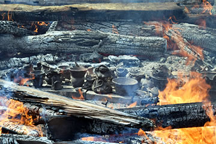
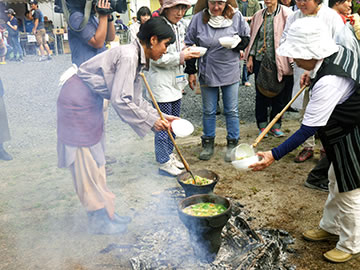

― これまでのイベント（記録） ―

|
| （画像をクリックで拡大します） |
「第27回秋の縄文野焼き祭り ～世界へともせ縄文の炎、根源から未来へ～」が開催されました。
いま世界的に高まっている縄文文化に対する関心。
１万年以上にわたる平和な時代の持続と大自然と共にある精神文化が育んだ独自の縄文造形に魅せられ、多くの
人たちがここに集いその心と技を学んでいます。
県内外から集まる陶芸教室生や法曽焼同好会の作品を縄文時代と同じ野焼きで焼き上げ、その熱気の体感を通じ
て広く交流を深めました。
さらに今回はスペインから猪風来美術館で縄文を学ぶため来日した女性アーティスト・ヌリアさんの参加もあり、
野焼き終了後には彼女を囲み「縄文アート文化交流会」が行われました。
=∴=∵=∴=∵=∴=∵=∴=∵=∴=∵=∴=∵=∴=∵=∴=∵=∴=∵=∴=∵=∴=∵=∴=∵=∴=∵=∴=
焼き上げるのは陶芸教室生や法曽焼同好会員、地元の小学生ら、そしてヌリアさんの作品など約110点。
今回もふたつの野炉を設け、女たちでひとつを受け持ちました。
心配された台風の影響も小さく、涼やかな風が舞う野焼き日和の天に感謝しながらの火おこし。

|
|

|
|

|

|

|

|
| （画像をクリックで拡大します） | |
2つの野炉の周りに作品を並べてあぶり焼き。
今回はじめて野焼きを体験するというスタッフも多く、猪風来や村上原野、そしてベテランメンバーらの指揮の
もと全員の心をひとつにして炎に向かい合います。
=∴=∵=∴=∵=∴=∵=∴=∵=∴=∵=∴=∵=∴=∵=∴=∵=∴=∵=∴=∵=∴=∵=∴=∵=∴=∵=∴=

|

|

|
|
|  |

|

|

|

|

|
| （画像をクリックで拡大します） | |
力があるもの、経験があるもの、忍耐力や思い切りの良さ、とっさの判断力などそれぞれの持ち味が生かされ、
見事に大きく育ってゆく縄文野焼きの炎。
刻々と変化していく土器の色、太い材木を井桁に組み上げ、細い材木を間に差し入れ……スタッフたちの大奮闘
が続きます。
=∴=∵=∴=∵=∴=∵=∴=∵=∴=∵=∴=∵=∴=∵=∴=∵=∴=∵=∴=∵=∴=∵=∴=∵=∴=∵=∴=

|
|

|

|
| （画像をクリックで拡大します） | |
台風一過の風の力・炎の力・太陽の力など自然の力が一体となり炎は燃え盛り火の子宮、火柱となり、作品は
新たな生命を宿して生まれ出てきます。
まるで生まれたての赤子のように初々しい作品たち。
=∴=∵=∴=∵=∴=∵=∴=∵=∴=∵=∴=∵=∴=∵=∴=∵=∴=∵=∴=∵=∴=∵=∴=∵=∴=∵=∴=

|
|

|
|

|
|
| （画像をクリックで拡大します） | |
岡山・倉敷・総社・矢掛町など岡山県内はもちろん、遠く東京や大阪、兵庫、広島、愛媛などから150人以上が
参加してくれました。
「縄文」に魅力を感じ、その本質を知りたいと思い集う人たち。
土をこね、命や魂の躍動を文様で土器に表現するすべを学び、竪穴住居の炉の火を囲み、そして縄文野焼きの
息吹を肌で感じる。
生命の循環や大地とのつながりを大切にする縄文の神髄をトータルで体験できる、縄文野焼き祭りはその集大成
の場となりました。。
地元民も市外からの協力者も手を携えて祭りを支えています。
前日からの準備に駆けつけてくれた人、早朝から会場設営に汗を流してくれた人、野焼きスタッフに急遽入って
くれた人、自主的に車の誘導をしてくれたり、体験コーナーを手伝ってくれる人など、たくさんの方々に助けられて2
7回目となる縄文野焼き祭りが行われました。
本当にありがとうございました。
=∴=∵=∴=∵=∴=∵=∴=∵=∴=∵=∴=∵=∴=∵=∴=∵=∴=∵=∴=∵=∴=∵=∴=∵=∴=∵=∴=
《縄文野焼き大賞》
縄文野焼き大賞など4賞が決定！
焼き上がった作品の中から特に独創性・縄文造形の光る作品を対象に「縄文野焼き大賞」など4賞を選考し表彰
いたしました。
受賞作は10月末まで当館に展示いたします。
●受賞者（敬称略）
◆縄文野焼き大賞 ………………… 荒川悠（総社市） 縄文土偶
◆新見市教育委員会教育長賞 …… 小林夢姫（本郷小２年） にーみん土偶
◆法曽焼同好会会長賞 …………… 高田一生（大阪府箕面市） 縄文土器
◆猪風来美術館館長賞 …………… ヌリア・ガルシア・カルデス（スペイン） 縄文土器と土偶

|
|
| 【縄文野焼き大賞】 | 【新見市教育委員会教育長賞】 |
| 【法曽焼同好会会長賞】 | 【猪風来美術館館長賞】 |
| （画像をクリックで拡大します） | |
=∴=∵=∴=∵=∴=∵=∴=∵=∴=∵=∴=∵=∴=∵=∴=∵=∴=∵=∴=∵=∴=∵=∴=∵=∴=∵=∴=
《縄文体験コーナー》
～縄文土器で煮炊きをしてみよう！～
２つの縄文土器を使って猪汁の煮炊き。
土器大好きな縄文女子たちが手際よく土器の周りに薪をくべて温め、水を入れ、野菜やキノコたっぷりの
野性味あふれる縄文鍋を作り上げました。
その美味しさに今回は行列ができる盛況ぶりで、みなあっという間に完食！
|  | |

|

|
| （画像をクリックで拡大します） | |
～粘土でつくろう～
沢山の方々が土器や土偶つくりに挑戦、思い思いの作品を作りました。
年齢に関係なく土に触れ縄目を転がすと、そこは縄文への入り口です。
～粘石で勾玉をつくろう～
白・黒・ピンクのやわらかな滑石を削って勾玉の形に。
ひたすらに削り続け、それぞれの形を目指します。
勾玉は命のかたち、命の豊饒を祈って作ります。

|
|

|
|
| （画像をクリックで拡大します） | |
=∴=∵=∴=∵=∴=∵=∴=∵=∴=∵=∴=∵=∴=∵=∴=∵=∴=∵=∴=∵=∴=∵=∴=∵=∴=∵=∴=
《販売コーナー》
地元法曽焼同好会による販売コーナーではうどん・猪カレーうどん・猪カレーライス・大山おこわなどが提供
されました。
飲み物や地元特産品法曽茶・法曽焼、ピオーネの販売もありました。

|

|
| （画像をクリックで拡大します） | |
=∴=∵=∴=∵=∴=∵=∴=∵=∴=∵=∴=∵=∴=∵=∴=∵=∴=∵=∴=∵=∴=∵=∴=∵=∴=∵=∴=
《縄文アート文化交流会～ヌリアさんを囲んで》
縄文野焼き祭り終了後、焼き上がったばかりの作品を前にホットな感動と縄文談義を語り合いました。

|
|
| （画像をクリックで拡大します） | |
ヌリアさんは９月の半ば過ぎから新見市法曽に滞在し、猪風来の縄文レクチャーを受け作品つくりに励んできま
した。
彼女のスペイン・カタルーニャの気質は見事に縄文と響きあい、たくさんの作品を創り出しました。

|

|

|
|
| （画像をクリックで拡大します） | |
彼女は縄文の祈りを「命があらゆる所に溢れますように」という言葉に要約しています。
これは、母なる大地と心を結ぶスピリットは世界的な根源力を持っていることを示しています。
「縄文ブーム」と言われる日本国内のみならず、国際的にも認識を共有できることを参加者らは実感していました。
=∴=∵=∴=∵=∴=∵=∴=∵=∴=∵=∴=∵=∴=∵=∴=∵=∴=∵=∴=∵=∴=∵=∴=∵=∴=∵=∴=
|
皆さんの多くは、なぜ私が新見の猪風来美術館に来ることになったのかと、思っておられることでしょう。 私はカタルーニャのバルセロナの芸術家です。私が縄文芸術のことを知った時、私は、森に隠れ、形を変えつつ棲む生物に関連した彫刻やオブジェを制作していました。 あの瞬間、私は既に縄文の美、土器、土偶に引きつけられていました。何故なら私は、人間との対話を通して意味のある世界が形作られる事に興味を持っていましたから。 そして色々なことが起こりました。情報が先に来て、次に、私が今知ろうとしていることは今までとは違う方法で創作するきっかけになるだろうと直感しました。それで、私は猪風来美術館に来たのです。 ここに来ることは簡単ではありませんでした。しかし私はこの工房で制作を続けてもう15日間が過ぎたのです。 私の縄文体験とは何でしょう？ それは深いものでした。猪風来美術館で発見した美の爆発は私の内面に深くインパクトを与えました。美、生命の守り、日々の祈り、内面の強い欲望、そのすべてが生命で溢れています。 田畑を潤す水、果実を実らせる木のような命。それを象徴し、命が続いていくように祈る女性の土偶。 猪風来さんは私を技と、美と、霊的な世界に導いてくださいました。その世界について、今までの私は表面的にしか知りませんでした。私は深く学び、芸術家として、そして人間的にも内面的に豊かになりました。その結果、私の作品と、個人的な、そして芸術家としての祈りは縄文の精神に彩られました。 もしかして猪風来さんと、息子さんの原野さんの作品は流行おくれで、古くて、趣味が悪くて不細工とさえ言う人がいるかも知れません。私は美の概念は一つではないと思います。見かたを変えれば、科学的な美、技術的な美、デザイン的な美、過去と最近の芸術傾向、美の可能性は様々です。 私が声を大にして言いたいことは、縄文の美は何年も前に世界中の重要な機関に認知され、縄文研究に対する人々の関心は減少するどころか、高まっていることです。そして猪風来さんは縄文造形を擁護し維持するリーダーの一人として知られ、その疲れを知らない美術界での貢献も知られています。 最後に、縄文造形を復活させた猪風来さん、息子さんの原野さん、そしてお二人の縄文芸術の表現作品に感謝いたします。縄文芸術は、紛れもなく日本的遺産を語る世界であり、その遺産とは、過去を語り、同時に、私たちを遠い祖先に近づけたり、私たち自身を語ったり、また、私たちが現在を生きるのを助けて、現在を豊かにしてくれる遺産でもあります。 私のすべての言葉はたった一つの祈りに要約できます。命があらゆる所に溢れますように。猪風来美術館と工房が日本中、世界中に知られますように。この命があふれる場所は多くの人たちと共有すべき、日本社会そして国際社会から認知されるべき場所です。猪風来さん、原野さん、よしこさんが高潔な精神で、とても大きな貢献をされたことに心から敬意を表します。 皆様、有難うございます。猪風来さん、原野さん、よしこさん、そしてご親切に私を家に貸していただいた森谷家の皆さん、野焼き祭りの協力者のすべての方々に感謝いたします。 感謝と尊敬をこめて、 ヌリア・ガルシア・カルデス |
| 翻訳： 辻江真弓 |
| →カタルーニャ語版を開く（PDF） Obriu la PDF en català |
=∴=∵=∴=∵=∴=∵=∴=∵=∴=∵=∴=∵=∴=∵=∴=∵=∴=∵=∴=∵=∴=∵=∴=∵=∴=∵=∴=
写真提供： 多田則明（香川県）
小林由典（法曽焼同好会）
=∴=∵=∴=∵=∴=∵=∴=∵=∴=∵=∴=∵=∴=∵=∴=∵=∴=∵=∴=∵=∴=∵=∴=∵=∴=∵=∴=

|
| 【「第27回 秋の縄文野焼き祭り」チラシ】 →PDF版を開く |